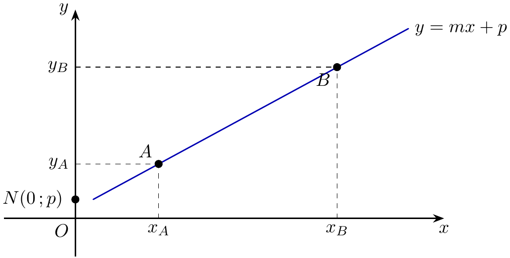
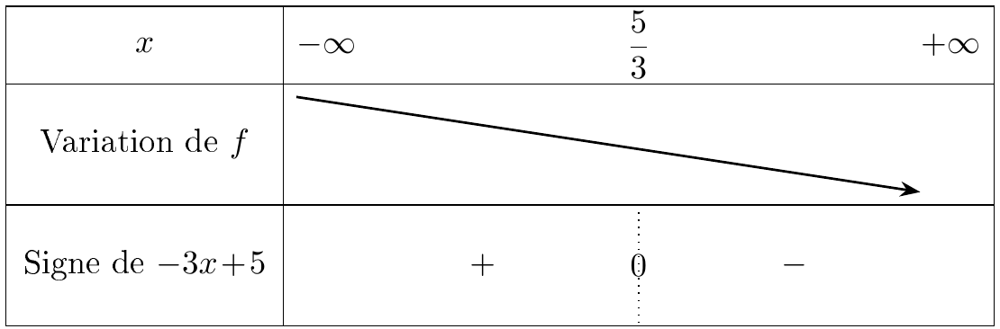
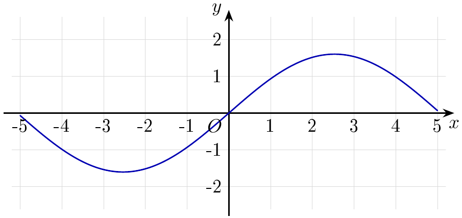
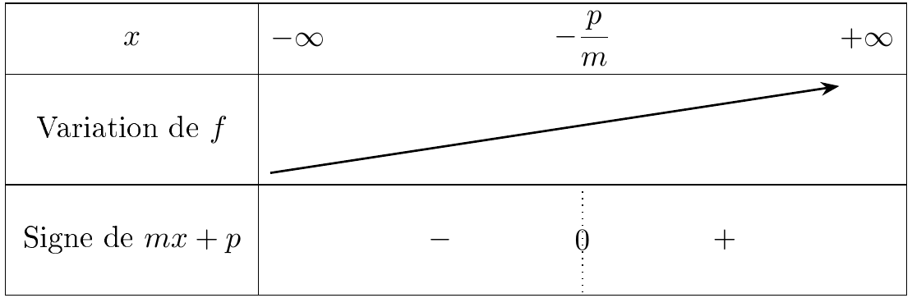
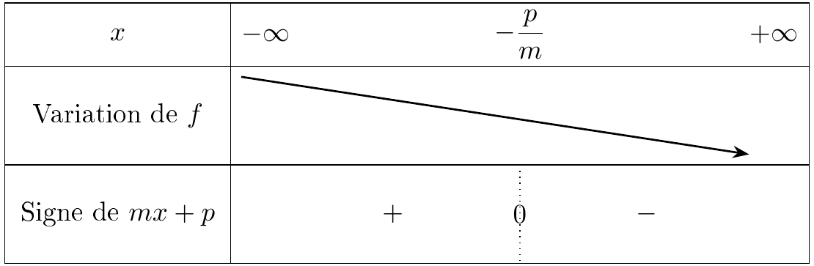
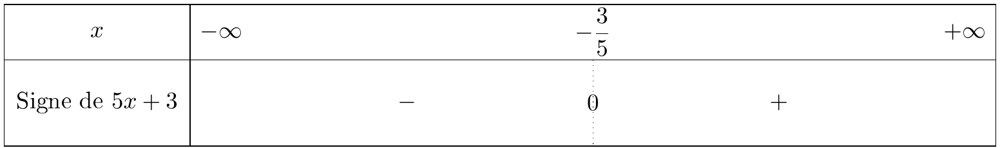
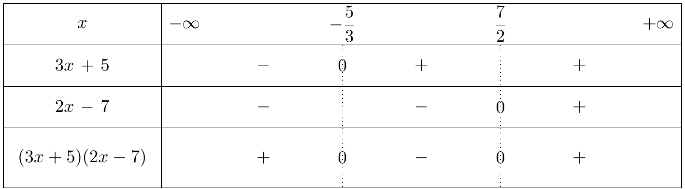
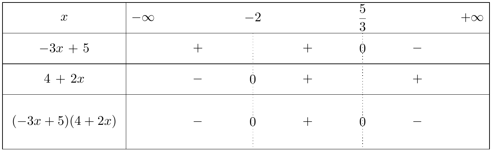
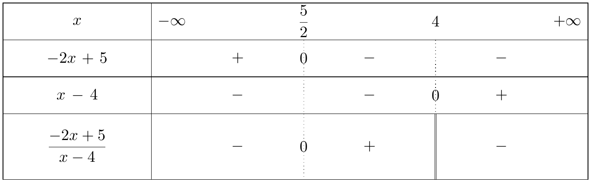

Chapitre 5 : La fonction affine et ses applications
Seconde · Chapitre 5 — La fonction affine · cours de Frederik de Peyrelongue
I. Définition
Les fonctions affines sont les fonctions définies sur l'ensemble $\R$ par
avec $m$ et $p$ deux paramètres réels.
Cas particuliers :
- si $m=0$, alors, pour tout réel $x$, $f(x)=p$ : la fonction est constante ;
- si $p=0$, alors, pour tout réel $x$, $f(x)=mx$ : la fonction est linéaire.
Les fonctions linéaires sont les seules fonctions dont le tableau de valeurs est un tableau de proportionnalité.
Identifier les fonctions affines ci-dessous :
Dans un repère du plan, la fonction affine définie, pour tout nombre réel $x$, par $f(x)=mx+p$ est représentée par une droite $D$.
Cette droite passe par le point $B(0\,;p)$.
Pour tous les points distincts $A\left(x_{A}\,;f(x_{A})\right)$ et $B\left(x_{B}\,;f(x_{B})\right)$ de $D$, on a :

Preuve : $A\in\mathcal{C}_{f}$, donc $f(x_{A})=m\,x_{A}+p$ ; de même $B\in\mathcal{C}_{f}$, donc $f(x_{B})=m\,x_{B}+p$.
En soustrayant membre à membre :
Comme $x_{A}\neq x_{B}$, on en déduit
On peut alors isoler $p$ : $p=f(x_{A})-m\,x_{A}$.
On appelle $p$ l'ordonnée à l'origine : le point $N$ de coordonnées $(0\,;p)$ appartient à la droite $D$.
On appelle $m$ le coefficient directeur de la droite.
II. Sens de variation d'une fonction affine
Une fonction $f$ est croissante sur un intervalle $I$ si elle conserve l'ordre.
Une fonction $f$ est décroissante sur un intervalle $I$ si elle inverse l'ordre.
$f$ est strictement croissante sur $I$ si, pour tous $x$ et $y$ de $I$ tels que $x<y$, on a $f(x)<f(y)$.
$f$ est strictement décroissante sur $I$ si, pour tous $x$ et $y$ de $I$ tels que $x<y$, on a $f(x)>f(y)$.
Graphiquement : une fonction strictement croissante monte constamment, et une fonction strictement décroissante descend constamment.
Une fonction est monotone sur un intervalle $I$ si elle est uniquement croissante sur $I$, ou uniquement décroissante sur $I$, ou uniquement constante sur $I$.
Soit $f$ une fonction affine définie sur $\R$ par $f(x)=mx+p$.
- si $m>0$, alors $f$ est strictement croissante sur $\R$ ;
- si $m<0$, alors $f$ est strictement décroissante sur $\R$ ;
- si $m=0$, alors $f$ est constante sur $\R$.
Démonstration : soient $x_{1}$ et $x_{2}$ deux nombres réels quelconques tels que $x_{1}<x_{2}$.
A. Premier cas : soit $m>0$.
Conclusion : pour tous nombres $x_{1}$ et $x_{2}$ tels que $x_{1}<x_{2}$, on a $f(x_{1})<f(x_{2})$.
Les images varient dans le même sens que les antécédents : la fonction est donc strictement croissante.
B. Deuxième cas : soit $m<0$.
Conclusion : pour tous nombres $x_{1}$ et $x_{2}$ tels que $x_{1}<x_{2}$, on a $f(x_{1})>f(x_{2})$.
Les images varient en sens inverse des antécédents : la fonction est donc strictement décroissante.
C. Troisième cas : $m=0$.
La fonction est constante.
Soit $f$ une fonction définie sur $\R$ par $f(x)=-3x+5$.
La fonction $f$ est une fonction affine et son coefficient directeur est négatif : la fonction est donc strictement décroissante.

III. Signe d'une fonction affine
Si $f(x)\leqslant 0$ sur un intervalle $I$, la fonction $f$ est de signe négatif sur $I$.
Si $f(x)\geqslant 0$ sur un intervalle $I$, la fonction $f$ est de signe positif sur $I$.
Un tableau de signe fait la synthèse du signe de la fonction sur son domaine de définition.
Soit la fonction $f$ dont la représentation graphique $\mathcal{C}_{f}$ est donnée ci-dessous. On lit sur cette courbe le signe de $f(x)$.

Soient $m$ et $p$ deux réels, avec $m$ non nul. Les tableaux suivants résument le signe de l'expression $m\,x+p$ :
Lorsque $m>0$, la fonction affine $f(x)=m\,x+p$ est croissante et s'annule pour $x=-\dfrac{p}{m}$ :

Lorsque $m<0$, la fonction affine $f(x)=m\,x+p$ est décroissante et s'annule pour $x=-\dfrac{p}{m}$ :

Soit $f(x)=5x+3$ : $f$ est une fonction affine, elle s'annule pour $x=-\dfrac{3}{5}$ et son tableau de signe est :

IV. Application aux signes de produits
Règle des signes dans $\R$ : soient $a$ et $b$ deux nombres réels.
Pour étudier le signe d'un produit ou d'un quotient, il suffit d'étudier le signe de chacun des facteurs du produit. On peut faire cela dans un tableau de signe, en intégrant chacun des facteurs et en ajoutant sur la dernière ligne du tableau le produit.
Étudions $A(x)=(3x+5)(2x-7)$.
$a(x)=3x+5$ est une fonction affine croissante, car $m=3$, qui s'annule pour $x=-\dfrac{5}{3}$.
$b(x)=2x-7$ est une fonction affine croissante, car $m=2$, qui s'annule pour $x=\dfrac{7}{2}$.

On vient lire dans le tableau le signe du produit :
Étudions $B(x)=(-3x+5)(4+2x)$.
$a(x)=-3x+5$ est une fonction affine décroissante, car $m=-3$, qui s'annule pour $x=\dfrac{5}{3}$.
$b(x)=4+2x$ est une fonction affine croissante, car $m=2$, qui s'annule pour $x=-2$.

On vient lire dans le tableau le signe du produit :
Étudions le signe de $Q(x)=\dfrac{-2x+5}{x-4}$.
On remarque que la fonction $Q$ est définie lorsque le dénominateur est non nul : son domaine de définition est $D_{f}=\left]-\infty\,;4\right[\cup\left]4\,;+\infty\right[$.
On rappelle que $4$ est donc une valeur interdite !
$N(x)=-2x+5$ est une fonction affine décroissante, car $m=-2$, qui s'annule en $x=\dfrac{5}{2}$.
$D(x)=x-4$ est une fonction affine croissante, car $m=1$, qui s'annule en $4$.

La double barre en $x=4$ signale la valeur interdite : le quotient n'est pas défini pour $x=4$, ce qui sépare les deux intervalles $\left]-\infty\,;4\right[$ et $\left]4\,;+\infty\right[$.